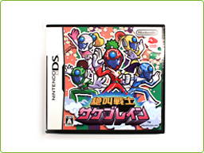
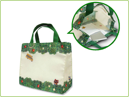
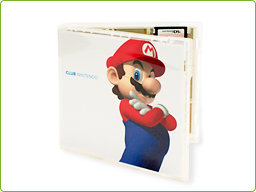
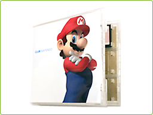
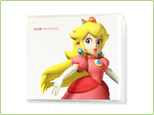
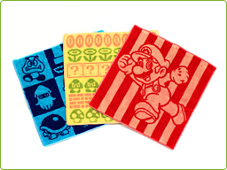
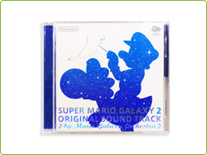

クラブニンテンドーにはさまざまな種類のオリジナルグッズが用意されています。しかも、いずれも任天堂の長い歴史や、ものづくりに対するこだわりが込められていて、納得の仕上がりになっています。
ここでは、おすすめのものを厳選して紹介しますが、オリジナルグッズはまだまだたくさんあります。また、今後も新しいグッズは続々と追加されます。自分のお気に入りのオリジナルグッズを見つけて確実に手に入れられるよう、クラブニンテンドーのサイトは定期的にチェックしておきましょう！
ここでは、おすすめのものを厳選して紹介しますが、オリジナルグッズはまだまだたくさんあります。また、今後も新しいグッズは続々と追加されます。自分のお気に入りのオリジナルグッズを見つけて確実に手に入れられるよう、クラブニンテンドーのサイトは定期的にチェックしておきましょう！
クラブニンテンドーでしかゲットすることができない、まさに完全オリジナルなゲームが、この『絶叫戦士サケブレイン』です。マイクに向かって掛け声を叫ぶとヒーローに変身できる、「マイクアクションゲーム」です。

『絶叫戦士サケブレイン』は、時代劇風の舞台の中で戦隊ヒーローを操作するという、独特の世界観を持っています。また、複数人プレイ専用（※プレイ人数は2～3人）になっていて、友だちや家族と声をそろえて必殺技を出したり、一緒に協力してトラップをクリアしたりといった仕組みも非常に斬新なものです。
クラブニンテンドーで『絶叫戦士サケブレイン』をもらって、みんなでオオエドの平和をとりもどしましょう！
クラブニンテンドーで『絶叫戦士サケブレイン』をもらって、みんなでオオエドの平和をとりもどしましょう！
『どうぶつの森』のキャラクターをあしらった、かわいらしいミニバッグです。シンプルなデザインなので、普段使いもOKです。また、ポリエステルでできているので、多少の水ならハジキます。
おりたたんで小さくすることができるので、予備のサブバックとしていつものカバンにしまっておいても良いでしょう。もちろん、近所へお買い物の際のエコバッグ的な使い方もおすすめです。
おりたたんで小さくすることができるので、予備のサブバックとしていつものカバンにしまっておいても良いでしょう。もちろん、近所へお買い物の際のエコバッグ的な使い方もおすすめです。

ニンテンドーDS用ソフトのカードを18枚収納できる、クラブニンテンドーオリジナルのカードケースです。ニンテンドーDS用ソフトのケースとまったく同じ大きさなので、ならべて保管できます。

この「DSカードケース18」には、「マリオ＆ルイージ」と「ピーチ＆キノピオ」の2種類のシートが封入されています。また、それぞれのシートが表と裏のリバーシブルで使えるようにもなっています。


これら合計で4種類の絵柄の中から好きなものを選び、ケースに差し替えて、ゲームソフトの持ち運びに活用しましょう。
マリオやクリボーなど、マリオシリーズでおなじみのキャラクターたちが、タオル生地のハンカチになりました。レッド／ブルー／イエローの色違いで3つのデザインから選ぶことができます。
「タオルハンカチ」の素材は綿100％で、表はカット仕上げで、ソフトな手ざわりです。何気ない身近なグッズですが、しっかりとしたこだわりをもって作られています。
「タオルハンカチ」の素材は綿100％で、表はカット仕上げで、ソフトな手ざわりです。何気ない身近なグッズですが、しっかりとしたこだわりをもって作られています。

最後に紹介するおすすめのオリジナルグッズは、ゲームのBGMとなっているサウンドトラックを集めたCDです。
『スーパーマリオギャラクシー2』（500ポイント）や『星のカービィ ウルトラスーパーデラックス』（400ポイント）、『Touch! Generation』（400ポイント）、『マリオ＆ルイージRPG』（400ポイント）など、さまざまなサウンドトラックをポイントと交換することができます。もちろん、これらのサウンドトラックはクラブニンテンドーのポイントでしか交換できない非売品です。
『スーパーマリオギャラクシー2』（500ポイント）や『星のカービィ ウルトラスーパーデラックス』（400ポイント）、『Touch! Generation』（400ポイント）、『マリオ＆ルイージRPG』（400ポイント）など、さまざまなサウンドトラックをポイントと交換することができます。もちろん、これらのサウンドトラックはクラブニンテンドーのポイントでしか交換できない非売品です。

通常はゲームの中でしか聴けない音楽を、聴きたい時にいつでも聴くことができ、気軽にゲームの世界にひたることができます。また、好きなゲームの音楽を普段の生活の中のBGMとして利用すれば、日常をより楽しく過ごせたり、思わぬ発見もあるかもしれません。